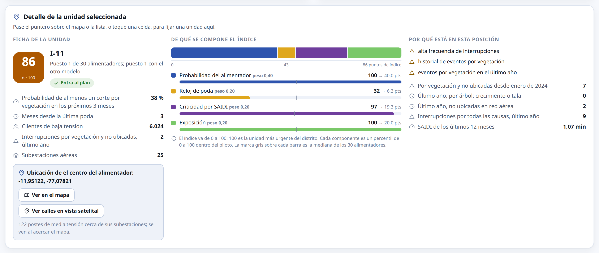
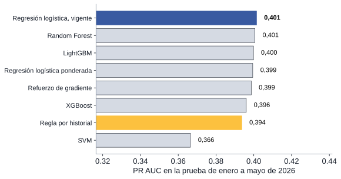
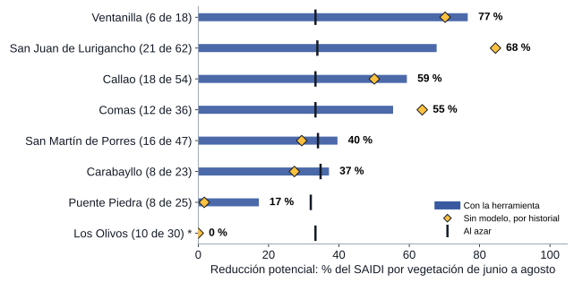
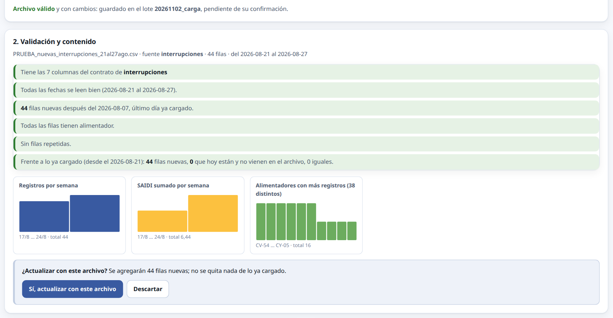
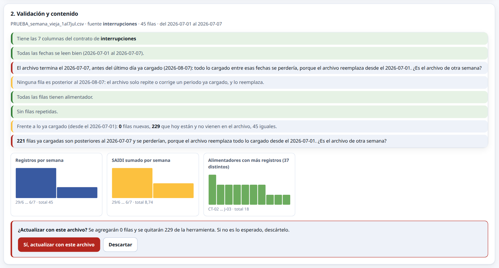

Poda priorizada por riesgo de vegetación
Herramienta para decidir dónde podar primero. Piloto Los Olivos
César Eduardo Pajuelo Reyes
Angello Giovani Soldi Cataño
Josué Nehemías Velo Poma
Paolo Medrano Terán
Pluz Energía y UTEC · noviembre de 2026


1 de cada 5 cortes en la red aérea viene de la vegetación
Interrupciones de Pluz, enero de 2024 a agosto de 2026

Hoy se poda por calendario o después del corte
La brecha que atendemos
Cómo se decide hoy
- Esquemas periódicos o reactivos.
- Inspección presencial, conexión por conexión.
- Sin un criterio que junte riesgo, tiempo sin poda, SAIDI y clientes.
Qué produce
- Podas innecesarias en unas zonas y tardías en otras.
- Cuadrillas limitadas repartidas sin orden de urgencia.
- Minutos de SAIDI y clientes afectados que se podían anticipar.
La idea: una lista que dice dónde podar primero
Idea, solución y cómo funciona
1. Datos de Pluz
Interrupciones, poda, guía de subestaciones y SAIDI, cada semana.
2. Riesgo a 3 meses
Un modelo estima la probabilidad de un corte por vegetación.
3. Índice de 0 a 100
Riesgo, tiempo sin poda, SAIDI y clientes expuestos.
4. Plan priorizado
Mapa, lista y plan descargable para los contratistas de poda.

Qué cambia frente a la forma actual
De la inspección conexión por conexión a un plan medido
Si la hubiéramos usado: más SAIDI evitable
Planes armados sin ver el futuro y contrastados con lo que pasó

Junio a agosto de 2026
Plan de mayo en los 8 distritos:
de SAIDI por vegetación se habrían podido evitar: una reducción potencial del 57 %, frente al 34 % podando al azar.
- Los Olivos, enero a mayo: con 10 de 30 alimentadores, el 74 % del SAIDI por vegetación de los tres meses siguientes habría sido evitable.
- Cómo se lee: es el SAIDI de los cortes que ocurrieron en alimentadores que el plan mandaba podar. Si la poda evita esos cortes, ese SAIDI no se habría producido. Es un techo, no una reducción medida.
Lo que sigue
Trabajo futuro y cierre
Marcar cada poda
preventiva o correctiva, para medir su efecto real.
Bajar al tramo
con el maestro de estructuras, para el primer corte de un alimentador.
Validar en campo
un trimestre programado con la lista, para calibrar los pesos.
Operar en Pluz
en sus instalaciones, con la carga semanal ya automatizada.
Organigrama del equipo del proyecto
Coordinador Mantenimiento Distribución · Subgerencia MT y BT
Planificación y programación de mantenimiento
Usuario clave: arma el plan del trimestre
Contratistas de poda: Dominion, Cobra, Lari y PA
Ejecutores del plan de poda
Centro de control y operaciones
Usuario del resultado: sigue SAIDI e interrupciones
Avance de requerimientos por sprint
Todo lo acordado en las cuatro reuniones está implementado
Qué predice el modelo
Datos, objetivo y horizonte
- Datos: 6.423 interrupciones desde enero de 2024, poda desde enero de 2025, guía de 14.318 subestaciones, ranking de SAIDI y 49.563 postes.
- Unidad: el alimentador, la única llave confiable entre interrupciones, poda y catastro. La subestación se usa para despachar.
- Objetivo: al menos un corte por crecimiento o tala de árbol, o no ubicado en red aérea, en los 3 meses siguientes. Las no ubicadas entran por acuerdo de la reunión N°2.
- Horizonte de 3 meses: en Los Olivos ningún horizonte entre 1 y 12 meses rinde mejor de forma distinguible, y 3 meses coincide con la programación trimestral.
- Se aprende de toda la concesión: Los Olivos tiene muy pocos cortes por vegetación para aprender solo de ellos.
Las cuatro señales del modelo y lo que suma el índice
Nombres de negocio para cada variable
Memoria de vegetación
Cortes por vegetación desde 2024. Dónde la vegetación ya tocó la red.
Vegetación reciente
Cortes por vegetación de los últimos 12 meses. Si el problema sigue activo.
Fragilidad del circuito
Interrupciones por todas las causas en 12 meses. Qué tan expuesto está.
Temporada del año
El mes, como ciclo. Ajusta por época de crecimiento.
Reloj de poda
Meses desde la última poda.
Impacto en SAIDI
Minutos del último año.
Exposición
Clientes y potencia que dependen de la unidad.
Cómo decide el modelo
Riesgo de un alimentador típico al mover una señal y dejar fijas las demás

- Fragilidad del circuito es la que más mueve la decisión: de 0 a 30 interrupciones en el año, el riesgo pasa de 7 % a 46 %.
- Memoria y vegetación reciente son dos ventanas de la misma señal y se leen juntas: sin cortes por vegetación, 7 % de los alimentadores tuvo un corte en tres meses; con cortes solo antiguos, 15 %; con cortes en el último año, 29 %.
- La temporada casi no cambia el riesgo en Lima: el modelo la mantiene, pero no decide por ella.
Del riesgo al índice: cada unidad explica su puesto
Detalle de una unidad en la herramienta

- Los cuatro componentes suman exactamente el índice; la marca gris es la mediana del distrito.
- Al simular 2.000 juegos de pesos, los primeros puestos se conservan en una mediana del 90 %: los pesos no cambian el plan.
Contrastado con meses reales que el modelo no vio
Dos pruebas fuera de tiempo

- Prueba 1, enero a mayo de 2026: cada mes se arma la lista y se mira qué pasó en los tres meses siguientes. Es la métrica de negocio del Benchmark.
- Prueba 2, piloto de control: el plan se arma con datos hasta mayo, con un modelo entrenado solo con lo que se sabía entonces, y se compara con junio, julio y agosto en los 8 distritos.
- Siempre contra dos referencias: la regla por historial, que es lo que se haría sin modelo, y el azar.
Benchmark: ocho modelos con los mismos datos
Por qué el modelo vigente es una regresión logística

- Ninguno supera a la regresión logística en PR AUC, la métrica de ordenamiento cuando los cortes son pocos.
- Se queda la más simple: calibrada y explicable; cada razón del detalle sale de ella.
- Frente a la regla por historial queda a la par en la concesión: el techo está en los datos, no en el algoritmo.
Piloto de control: mes a mes
Reducción potencial de SAIDI por vegetación con el plan de mayo, en los 8 distritos

- Cada barra es SAIDI evitable: minutos de los cortes que ocurrieron en los alimentadores que cada plan mandaba podar. Más alto es mejor.
- En los tres meses la herramienta supera al azar con el mismo número de alimentadores.
- Frente a la regla por historial, empata: gana en agosto, empata en julio y pierde por poco en junio.
- Agosto llega al día 20, último dato cargado.
Piloto de control: acumulado de junio a agosto

¿Y si solo usamos la regla por historial?
Qué es, por qué empata y qué agrega la herramienta
La regla por historial
Ordena los alimentadores por sus cortes por vegetación del último año y desempata con los cortes desde 2024. Es lo mejor que se puede hacer con una hoja de cálculo.
- Donde difieren, empatan: 0,59 min de SAIDI en los que solo eligió el plan y 0,53 en los que solo eligió la regla.
- Ninguno de los dos llega al resto: 1,47 min (22 %) cayeron en alimentadores sin cortes por vegetación en el último año.
Pondera el impacto
La regla cuenta cortes; el índice suma SAIDI, clientes expuestos y tiempo sin poda.
Da una probabilidad
Calibrada: cada semana se mide si el riesgo anunciado se cumple.
Se vigila sola
Cada semana compara su orden con la regla y avisa si conviene reentrenar.
Puede crecer
Con poda preventiva o correctiva y causas reetiquetadas; la regla se queda fija.
Piloto de control por distrito
Reducción potencial: % del SAIDI por vegetación de junio a agosto que el plan habría podido evitar

- Supera al azar en 6 de los 8 distritos, con Ventanilla, San Juan de Lurigancho y Callao arriba.
- Los Olivos casi no tuvo cortes en esos meses (2 eventos, marcado con asterisco); allí la prueba de enero a mayo da 74 %.
- Puente Piedra es el caso débil: casi todo su SAIDI vino de un solo corte, en un alimentador sin cortes por vegetación en el último año.
Demo funcional
Herramienta, Benchmark y Carga semanal, publicadas y con datos al corte de agosto de 2026
- Plan y KPI del trimestre
- Detalle de cada unidad
- Mapa satelital y búsqueda
- Comparar distritos
- Benchmark y carga semanal
Operación semanal
La carga del archivo de Pluz desde el navegador


- Dos revisiones antes de cambiar nada: en el navegador y en el pipeline, que compara con lo ya cargado.
- Respaldo y deshacer: se guardan las cinco últimas cargas.
- Freno: si el modelo cae más de 10 puntos bajo la regla, no se publica y se avisa.
Gracias
Preguntas y comentarios
Entregables: versión piloto, manual de usuario, documentación técnica e informe final.